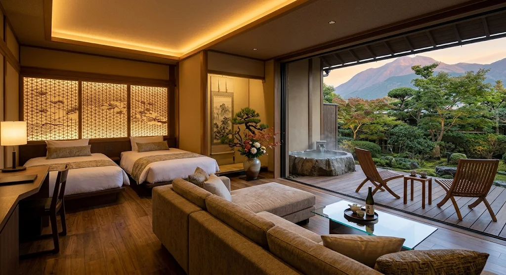
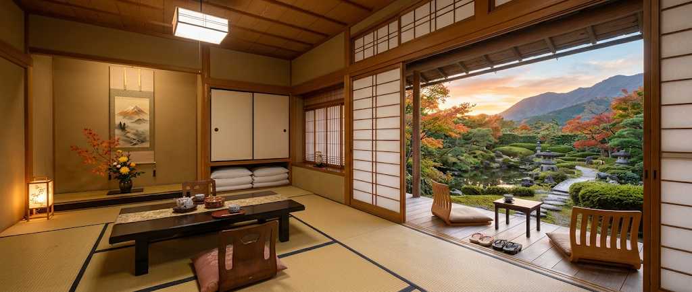
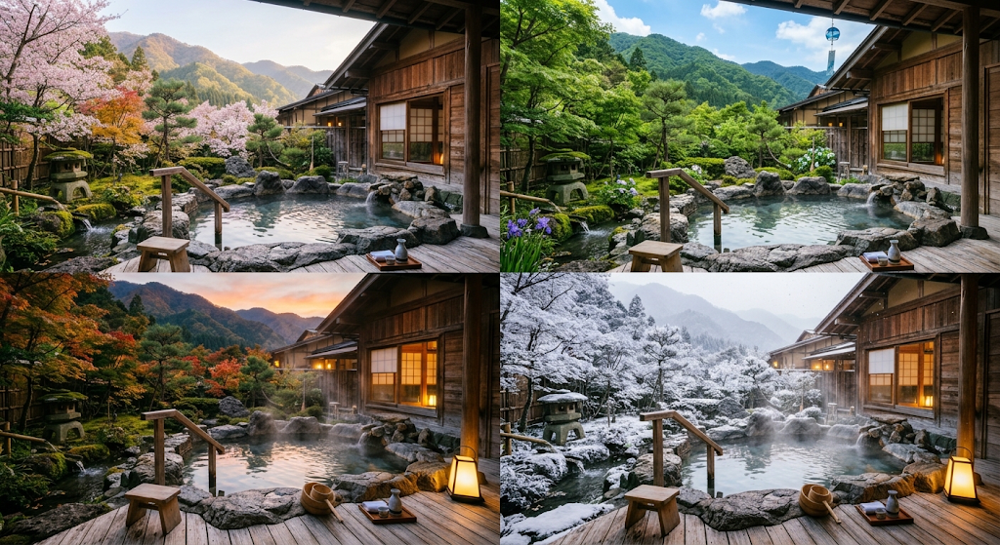
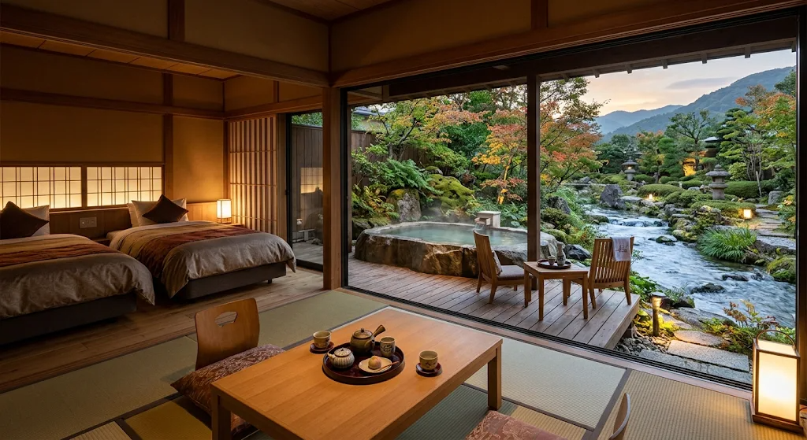
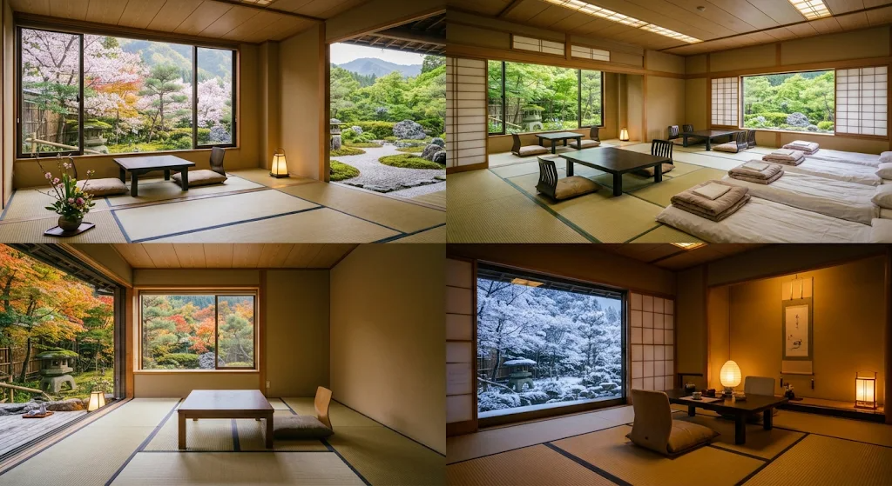
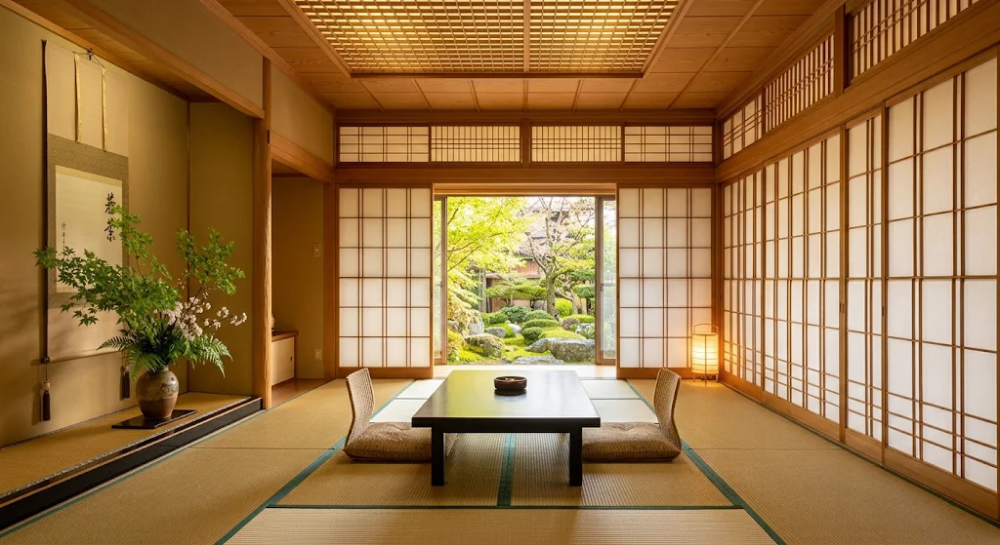
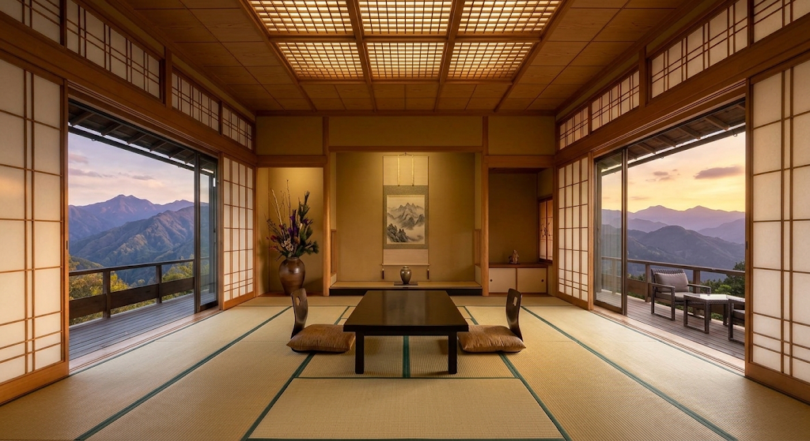
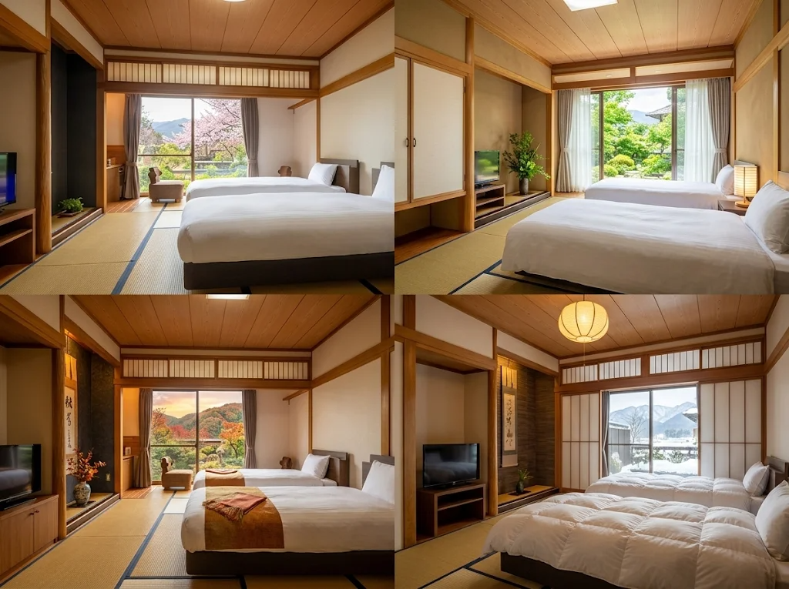
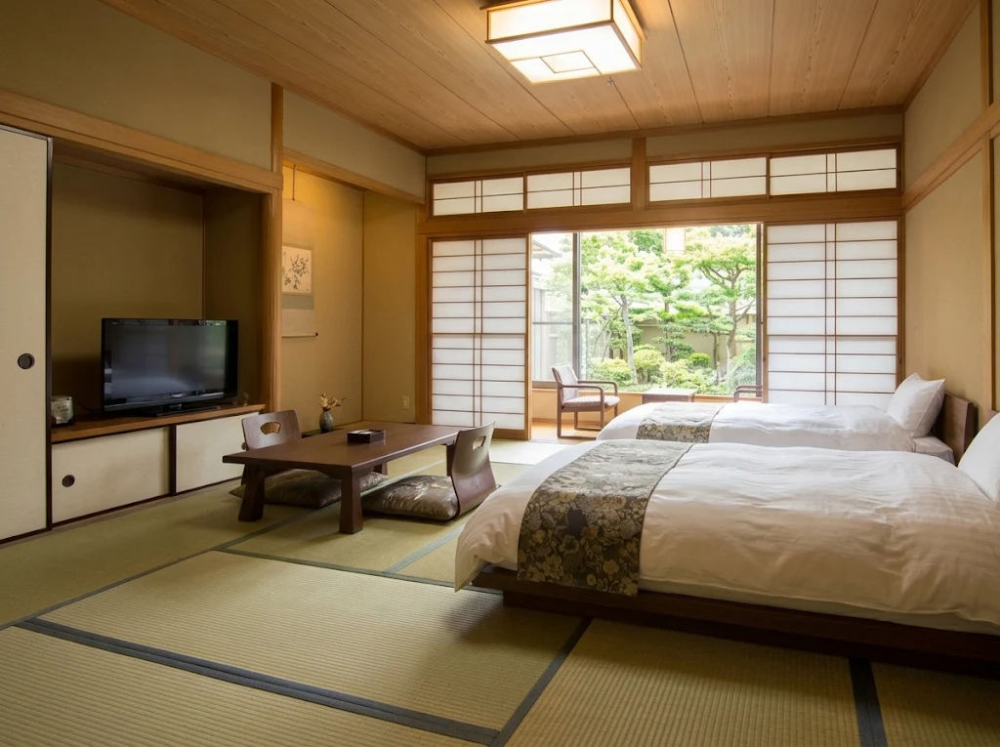
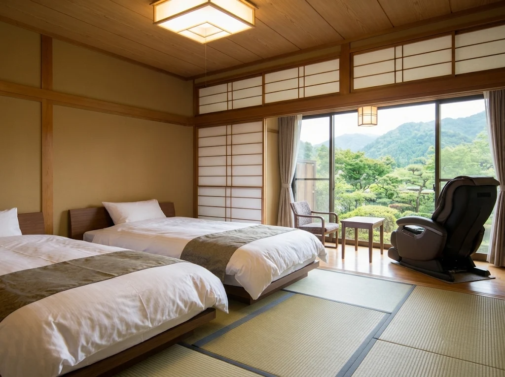

松風の間 露天風呂付特別室
客室二間と応接間を備えた、当館で最も広い特別室。専用の露天風呂から四季の景色を独り占めできます。記念日など大切な日の滞在に。
※ この部屋は1部屋限定です。
お部屋の詳細
- 広さ
- 約75㎡(和室二間・応接間・広縁)
- 定員
- 2〜4名
- 寝具
- 布団
- お風呂
- 檜造りの専用露天風呂(源泉かけ流し)
- 設備
- 応接セット、足湯テラス、空気清浄機、冷蔵庫、Wi-Fi、浴衣・バスアメニティ

景色を楽しめるお部屋、露天風呂付きのお部屋、気軽に泊まれるお部屋など、旅のスタイルや予算に合わせて選べる多彩なお部屋をご用意しています。お部屋の設備は異なりますが、基本のサービスはどのお部屋も同じです。
部屋の露天風呂で、自分だけの温泉時間を。四季の景色を眺めながら、のんびり過ごせるお部屋です。


客室二間と応接間を備えた、当館で最も広い特別室。専用の露天風呂から四季の景色を独り占めできます。記念日など大切な日の滞在に。
※ この部屋は1部屋限定です。

好きな時に好きなだけ、部屋の露天風呂へ。時間を気にせず過ごしたい方のための、くつろぎの客室です。
※ この部屋は4部屋限定です。
畳の香りに包まれる、落ち着いた和室。景色や広さ、予算に合わせて選べます。


基本となる和室。部屋にこだわりがない方、まずは和室で過ごしたい方におすすめです。

広々とした空間で、ご夫婦やご家族がゆっくり過ごせる和室です。
ぐっすり眠れるベッド付きのお部屋。旅のスタイルに合わせてお選びください。


畳の和室にベッドを備えた、和と洋のいいとこ取りのお部屋です。

広縁にマッサージチェアを備えたツイン。リラックスと安眠にこだわったお部屋です。
※ この部屋は2部屋限定です。